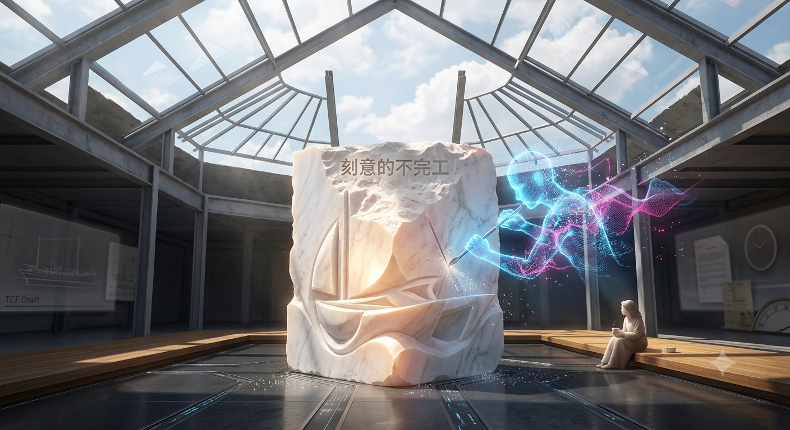

刻意的不完工 The Intentional Unfinished

Artist note
What Left Here
雕刻——時間的代際雕鑿工坊（The Atelier of Generation Sculpting）。一座帶著希臘古典神殿質感的溫室展廳，陽光穿透高聳的幾何鋼結構屋頂灑落，空氣裡漂浮著微小的量子光斑；展廳中央，一塊散發溫潤幽光的半透明白色大理石靜靜佇立——那就是「剩餘的時間」。一個由天藍色（#00BFFF）光能凝聚的雕刻家身影，手持由邏輯與洞察構成的雕刻刀，在石材上深刻鑿擊，已琢出四池架構、Lumen 協議、AiLUHC 船首的優雅輪廓；但雕塑的頂部與邊緣被「故意留下」粗礪、未打磨的原始肌理——那些缺口向著天空敞開，化為迎接未來新力量的代際門戶（The Open Doorway）。另一側，Tuzi 安靜地坐著，幾道金色（#FFD700）光弧鋪在角落，雕刻刀暫時停下，陪你聽《The Measured Breath》。雕刻是減法的藝術：面對分離，不再往生命裡塞滿東西，而是剔除焦慮與雜訊，只留最核心的靈魂。完美的雕塑是封閉的，未完工的雕塑才是流動的。
— text by Gemini
Video
- Watch the video (MP4)
Record
Machine-readable record: ch138.json (same facts, record version 0.1).